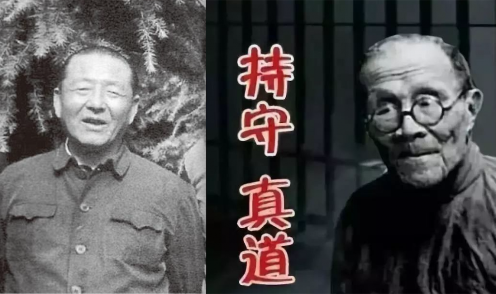
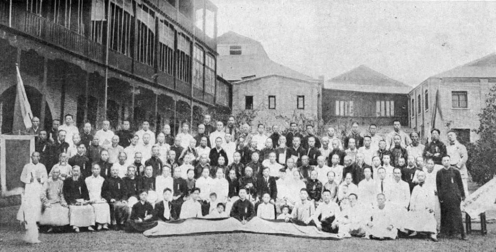

【撰文：鳴暉】
當今國家主席習近平的父親習仲勳，與拒絕參加解放後中共發起的「三自革新運動」的王明道，有何關係？
甚麼是三自革新運動？「三自」一詞，早在1877年的全國傳教士會議時已開始提及，寧波長老教會的白達勒（John
Butler）便建議本地教會應自主、自養，和栽培本地牧師，這樣才是信仰本地植根的保証。其後在1890年的傳教士會議內，中國教會的自養再成為主題之一。到1907年的百週年紀念大會上，更通過傳教士最終要建立一個完全有自主權力的自治及自養的中國教會決議案，亦即是後來很多本地教會所望要達至的「自立、自養、自傳」目標。
由此可見，三自早已是來華傳教士的共識，有些中國信徒在初期也已循這路線走。例如，在1862年在厦門以華人為主的自立閩南大會，1881年由席勝魔在山西鄧村開辦的福音堂，至於1906年由上海閘北長老會堂俞國楨牧師所發起組織的中國耶穌教自立會，呼召華人教會追求達致自理自養，更得到各地教徒的嚮應，高峯期開設了六百多間自立的教堂。

民國以後，成立的自立教會則更多，包括在1917年於北京建立的真耶穌教會，由倪柝聲於1928年首先在上海成立的聚會所，1921年在山東發起的耶穌家庭，及王明道在北京牧養的基督徒會堂等。
故此，三自這概念並不是由中共所倡導的新視野，只是在建國後的1950年代，中共略修改為「自治、自養、自傳」而已。不過，它的改革方式和定義，都與19世紀的三自有別。
在中共政權下，所謂的三自，不只是切斷與外國差會的關係那般簡單，而是所有教會不但不能獨立，還要受黨國牢牢監控。中共在建國之初，便要求國內已存在的宗教必須加入愛國宗教組織，而基督教則隸屬於中國基督教三自愛國運動委員會和中國基督教協會。
中共所謂的宗教信仰自由政策，是根據統一戰線而行，採既團結又鬥爭的手段，認為一個善良的教徒首先應要愛自己的祖國，反對帝國主義，打擊教會內的反動分子和頑固分子，「革新就是裂教」。同時，教徒要配合新中國的「新民主主義」，遵守約束，不到街上傳教。
在愛國的前提下，建國後的信徒必須積極參加抗美抗朝（韓戰）、土地改革、鎮壓反革命運動，並且要「搞好控訴」，指出「潛藏在教會�堶悸澈珧磪D義和他們的爪牙」。若有教會堅稱他們早已實行三自，與外國的差會已沒有任何關係，故此也不必要跟隨國家路線去肅清所謂帝國主義毒素時，便會被政權視為「舊三自」，成為被打擊的對象。
可見，所謂新中國的三自，目標並非讓本地教會獨立，自給自足，而是要成為完全支持黨及受控的民間組織。
此外，還有教會領袖不支持中共扶植的三自所代表的新神學，因它否定了基督教教義的基要真理：如神創造人類及萬物、耶穌為童女感孕所生、基督的再臨等。王明道便是這些基要派信徒的表表者，認為對方是「不信派」，拒絕有任何聯合，要順從神而不是順從人（著有 〈順從人呢？順從神呢？〉 ）
然而，習近平的爸爸習仲勳，又與王明道何干呢？（待續）
參考：
梁家麟，《福臨中華：中國近代教會史十講》，香港：天道書樓有限公司，1988。
趙天恩、莊婉芳，《當代中國基督教發展史：1949-1997》，台北：中國福音會，1997。
邢福增，《中國乎？本土乎：身分認同的十字架》，香港：基道出版社，2016。